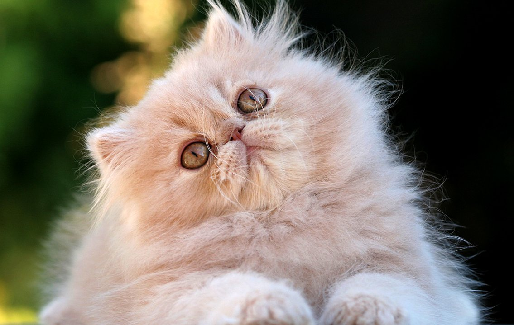
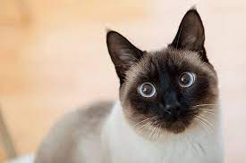
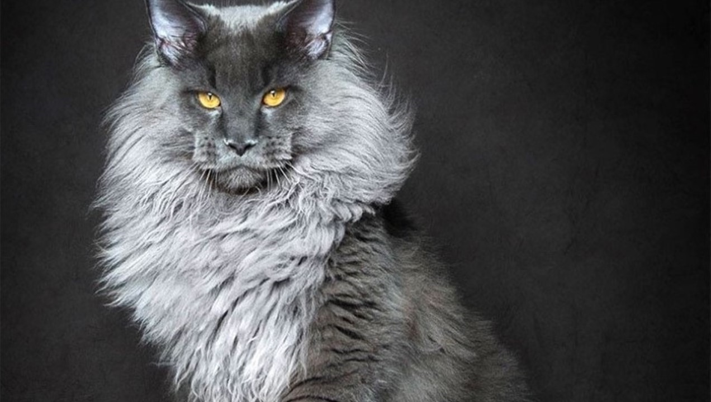
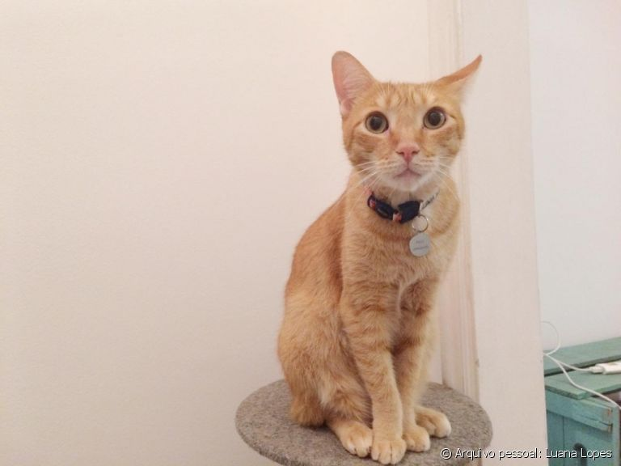

O gato Persa é, para muitos, sinônimo de gato de luxo. Com seu porte tranquilo, pelagem longa e majestosa e focinho plano, o tornam “rei das exposições”. Todo veio ama, e quer ter um.

Siamês
A aparência de um gato Siamês é o que mais chama atenção: olhos bem azuis e pelos claros com extremidades mais escuras (rosto, orelhas, patas e rabo). Um gato devera elegante com uma cara de burgues

Sphynx(gato pelado)
Exótica e diferente, a raça Sphynx é a mais rara dos felinos. Também conhecido como Pelado Canadense, o gato desta raça possui o visual totalmente sem pelos! Muito conhecido por ser pelado, parece um alienigena mas e muito lindo.
Gato peludo, Conhecido como “gigante gentil”, é muito lembrado por sua habilidade de caça. Por esse motivo, precisa gastar muita energia e gosta bastante de brincar. parece um leao muito chique

Gato Caramelo
Sem duvidas alguma e o gato mais brabo de todos, uma mistura de todo mundo, fazendo assim que ele se tornasse o melhor perante a todos, o deus dos gastos e que todo mundo gosta.

Gatinho Tom
Gostando ou nao de gatos, todo mundo ja teve um, com um humor duvidoso, e um dos gatos que mais alegram a criancada, muito pica o tom